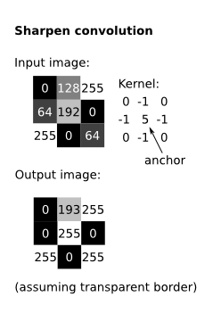
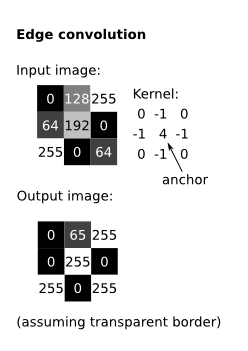

Image convolutions and transformations
Table of Contents
Linear filters (convolutions)
$$\text{dst}(x,y) = \sum_{0 \leq x' < c, \quad 0 \leq y' < r} K(x',y') * \text{src}(x + x'- x_a, y + y' - y_a)$$
where \(K\) is the kernel, \(c\) is the number of columns in the kernel, \(r\) is the number of rows in the kernel, \(x_a\) is the \(x\) position of the anchor (in the kernel), and \(y_a\) is the \(y\) position of the anchor.
| Kernel is 10x10, all values equal to 0.01 | Kernel is 20x20, all values equal to 0.0025 | Kernel is 20x1, all values equal to 0.05 |
We can also achieve a sharpening effect.
|  |

From Wikipedia
{kind=link}
And we can achieve an edge effect.
|  |
Erosion
$$\text{dst}(x,y) = \min_{(x',y'): K(x',y') \neq 0} \text{src}(x+x', y+y')$$
| Erosion with a 4x4 kernel of 1's | Lena in binary | Binary image eroded by 4x4 kernel of 1's |
Dilation
$$\text{dst}(x,y) = \max_{(x',y'): K(x',y') \neq 0} \text{src}(x+x', y+y')$$
| Dilation with a 4x4 kernel of 1's | Lena in binary | Binary image dilated by 4x4 kernel of 1's |
Remapping
$$\text{dst}(x,y) = \text{src}(\text{map}_x(x,y), \text{map}_y(x,y))$$
Affine transformations
An affine transformation is any transformation that can be specified as a linear transformation (matrix multiplication) plus a translation (vector addition).
Affine transformations include: rotations, translations, scaling, and combinations of these.
\begin{equation} A = \begin{bmatrix} a_{00} & a_{01} \\ a_{10} & a_{11} \end{bmatrix} B = \begin{bmatrix} b_{00} \\ b_{10} \end{bmatrix} \end{equation} \begin{equation} M = [A;B] = \begin{bmatrix} a_{00} & a_{01} & b_{00} \\ a_{10} & a_{11} & b_{10} \end{bmatrix} \end{equation}Then we take a point, \([x, y]^T\), add an extra \(z\) dimension set to \(1\) ("homogeneous coordinates"), and multiply:
\begin{equation} T = M \times [x, y, 1]^T = \begin{bmatrix} a_{00}x + a_{01}y + b_{00} \\ a_{10}x + a_{11}y + b_{10} \end{bmatrix} \end{equation}Examples
The identity transformation:
\begin{equation} A = \begin{bmatrix} 1 & 0 & 0 \\ 0 & 1 & 0 \end{bmatrix} \end{equation}Scale the image to half its size:
\begin{equation} A = \begin{bmatrix} 0.5 & 0 & 0 \\ 0 & 0.5 & 0 \end{bmatrix} \end{equation}Here is a 90-degree rotation:
\begin{eqnarray} M &=& \begin{bmatrix} \cos(\pi/2) & \sin(\pi/2) & (1-\cos(\pi/2))x_c - \sin(\pi/2)y_c \\ -\sin(\pi/2) & \cos(\pi/2) & \sin(pi/2)x_c + (1-\cos(pi/2))y_c \end{bmatrix} \\ &=& \begin{bmatrix} 0 & 1 & x_c - y_c \\ -1 & 0 & x_c + y_c \end{bmatrix} \end{eqnarray}where \(x_c, y_c\) is the location of the center of the image.
Here is a 45-degree rotation:
\begin{equation} M = \begin{bmatrix} \cos(\pi/4) & \sin(\pi/4) & (1-\cos(\pi/4))x_c - \sin(\pi/4)y_c \\ -\sin(\pi/4) & \cos(\pi/4) & \sin(pi/4)x_c + (1-\cos(pi/4))y_c \end{bmatrix} \end{equation} |
||
| Scaled, no translation | Scaled, with translation | 45-degree rotation plus translation |
Perspective transformations
Then we divide out \(w\), yielding: \([\frac{x'}{w}, \frac{y'}{w}, 1]^T\). We therefore draw the point \((\frac{x'}{w}, \frac{y'}{w})\).
The example on the left uses this kernel:
\begin{equation} M = \begin{bmatrix} 0.53009 & -0.47993 & 79.0 \\ -0.31048 & 0.50159 & 59.0 \\ -0.00094 & -0.00131 & 1.0 \end{bmatrix} \end{equation}Because an perspective transformation is a \(3 \times 3\) matrix with eight unknowns, we can determine the transformation between any two images with only four 2D points.
We could, for example, take a skewed view from a surveillance camera, and figure out the actual plane being viewed (assuming we are monitoring a flat area), by just figuring out the ground coordinates of four pixels in the video.
Of course, surveillance videos often have low resolution, so we probably cannot pick out the exact ground coordinates of any pixels. We can instead approximate the affine transformation; that is, we can find the transformation that minimizes the error. Four point correspondances is now not enough; we need lots, maybe 50 or 100, the more the better. (Perhaps we can automatically find these.) Then different transformations can be tested, and we can pick out the one that minimizes the error between chosen ground coordinates and predicted ground coordinates (from the transformation). This learning can be achieved with a single layer neural network.
Source code
Grab the source code for all of these examples: https://github.com/joshuaeckroth/teach-computer-vision